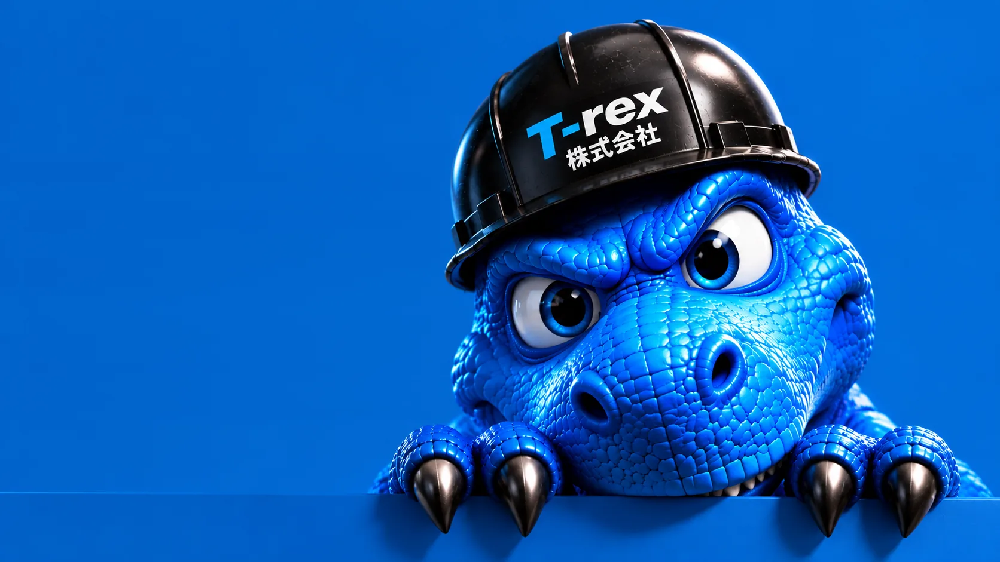
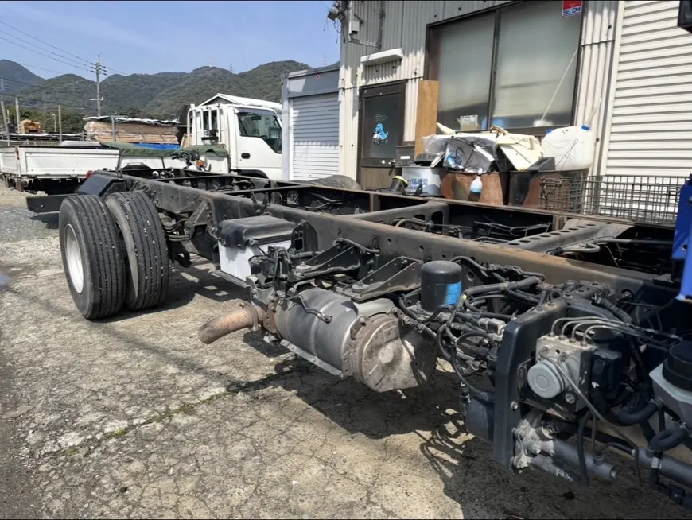
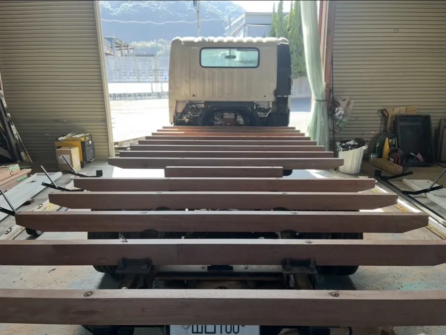
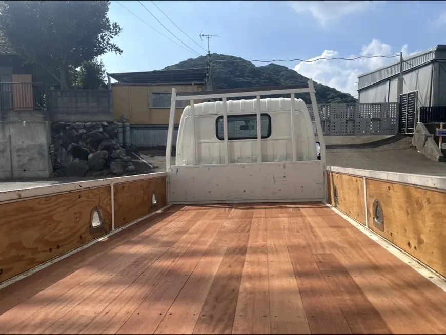
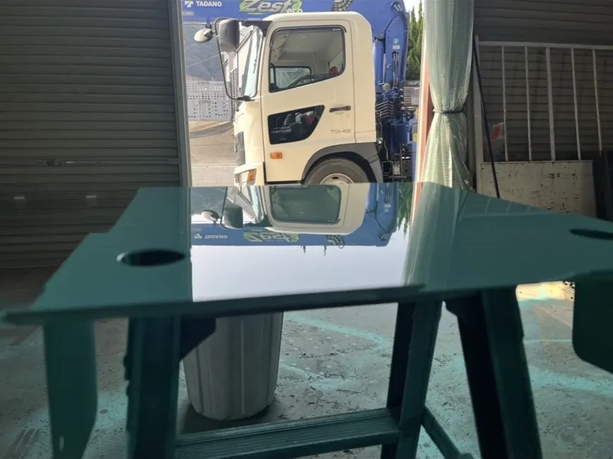
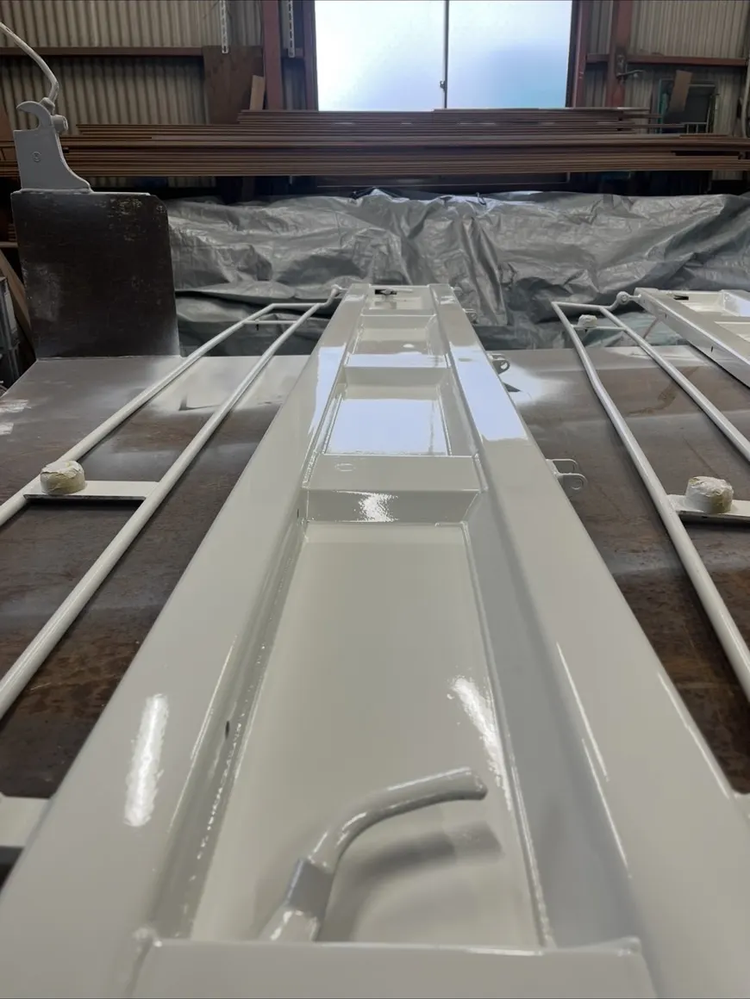
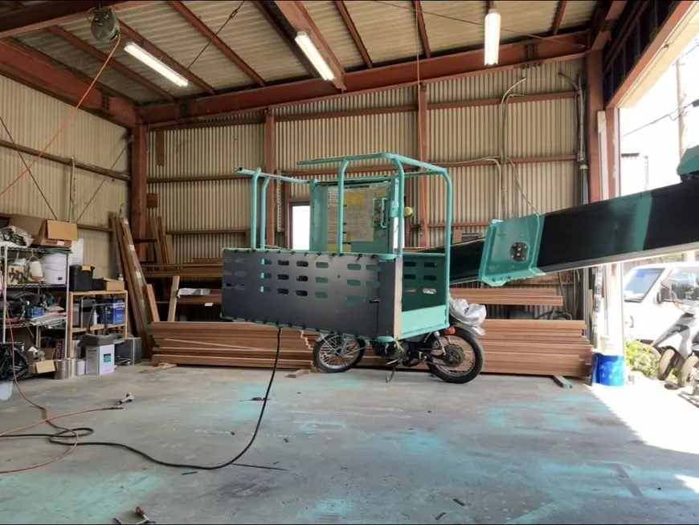

SCROLL(01)Service事業内容
車両の困りごとを、ひとつの窓口で引き受けます。
-
01
直す。
-
02
変える。
-
03
駆けつける。
そのほかの対応Other Services
- 車両修理エンジンから足回りまで、整備士が一括で対応します。
- 事故対応・保険修理事故後の対応から、保険修理までサポートします。
- メンテナンス・点検定期点検で、トラブルを未然に防ぎます。
- 車両陸送・軽運送車両や資材を、安全・確実にお届けします。
(02)Works施工実績
シャーシから、仕事に戻れる荷台へ。
シャーシだけの状態から、根太を据え、床を張って仕上げる。実際の現場の一部です。
Case 01荷台換装
01 — Before

施工前 — シャーシのみ荷台を外し、骨組みの状態から確認します。 02 — Process

施工中 — 根太の設置用途と積み荷に合わせて、根太を据えます。 03 — After

床板張替え — 完成床板を張り、仕事に戻れる荷台に仕上げました。
Moreそのほかの施工

鈑金塗装塗装仕上げ — 鏡面パネル下地処理から塗装、磨きまで自社で仕上げます。 
鈑金塗装部品の塗装作業取り外した部品も、一つずつ塗り直します。 
架装特殊車両の架装作業用途に合わせた架装・特装にも対応します。
(03)Area対応エリア
北九州から、福岡・山口へ。
北九州を拠点に、福岡県と山口県の現場に対応しています。工場への持ち込みも、現場への出張も承ります。その他の地域もご相談ください。
福岡県Fukuoka
北九州Base — Kitakyushu
山口県Yamaguchi
- 01出張修理動かせない車両の元へ、こちらから伺います。
- 02持込修理工場への持ち込みも承ります。
(04)Company会社概要
技術で、未来の現場を支える。
- 設立
- 2025年1月
- 資本金
- 300万円
- 事業内容
- 7事業
- 会社名
- T-rex株式会社
- 代表者
- 中津留 龍也
- 設立
- 2025年1月
- 資本金
- 300万円
- 所在地
- 福岡県北九州市
- 事業内容
- 鈑金塗装、荷台換装・修理、出張修理、車両修理、事故対応・保険修理、メンテナンス・点検、車両陸送・軽運送
- 主な取引先
- 建設機械リース会社、解体業、建設業、土木業、運送業
- 対応エリア
- 福岡県、山口県（その他の地域もご相談ください）
- 電話番号
- 090-7531-5428
- FAX
- 093-967-2347
- 営業時間
- 9:00〜18:00（定休日：祝日・日曜日・土曜日（営業日あり））
(05)Recruit採用情報
現場を支える仲間を、募集しています。
鈑金塗装や車両整備の仕事に興味がある方、まずは気軽に話を聞きに来てください。未経験の方も歓迎します。
- 01管理士・作業スタッフSite Crew現場の安全・管理・調整・記録など、作業が円滑に進むよう現場を支える仕事です。
- 02鈑金・塗装スタッフBody & Paint鈑金・塗装や仕上げ作業など、確かな技術で車両や機械をよみがえらせます。
- 03出張サービススタッフField Serviceお客様の現場へ出向き、点検・修理・作業サポートを行います。
- 04事務・サポートスタッフOffice Support見積や書類の作成など、現場と会社を内側から支えます。
(06)Contactお問い合わせ
お問い合わせ
修理の相談、見積もりの依頼など、お気軽にご連絡ください。急ぎの方はお電話が確実です。